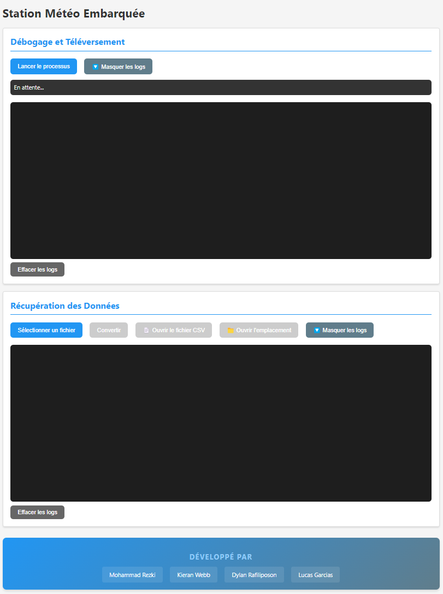
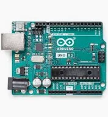
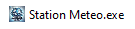
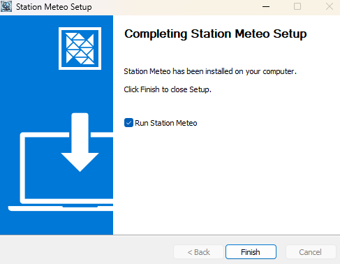
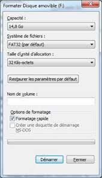
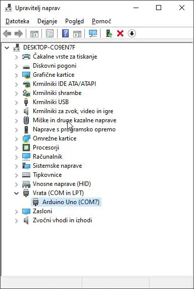
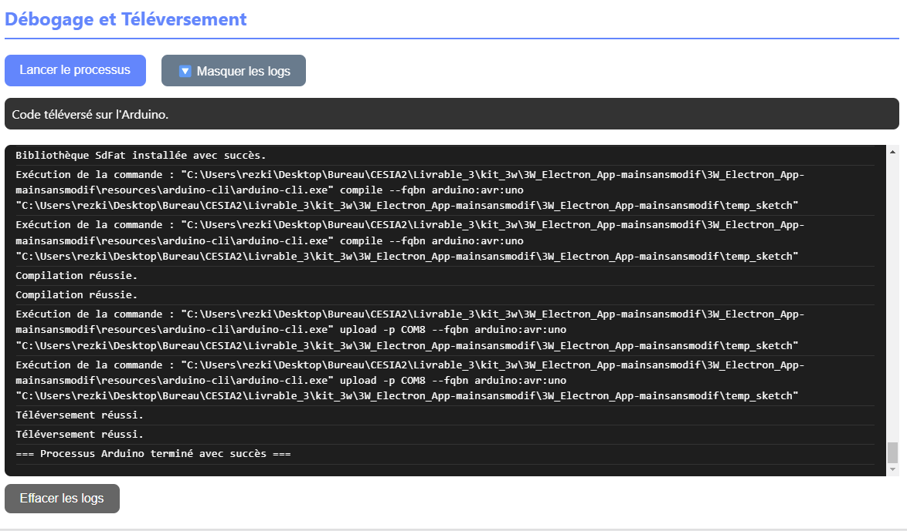
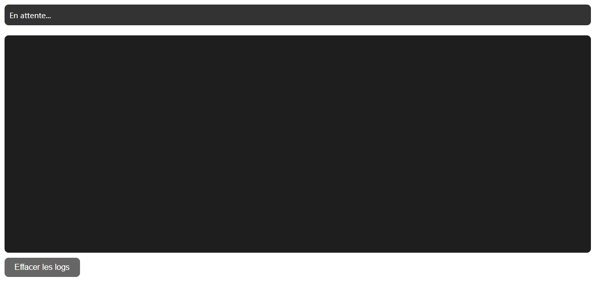
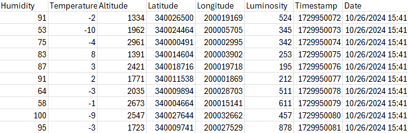

Documentation Utilisateur - Station Météo Embarquée
Table des matières
Introduction
Vue d'ensemble du système
La Station Météo Embarquée se compose de deux parties principales :
-
Le matériel : Station météo basée sur Arduino
- Arduino UNO
- Capteurs (température, humidité, GPS, etc.)
- Module SD pour le stockage
-
Le logiciel : Application de gestion
- Interface utilisateur intuitive
- Outils de programmation automatisés
- Convertisseur de données

Fonctionnalités principales
- Programmer facilement une station météo Arduino
- Récupérer et convertir les données météorologiques collectées
- Visualiser les logs et suivre le processus d'installation
Installation
Prérequis matériels détaillés
-
Arduino UNO üéõÔ∏è
- Version recommandée : R3 ou ultérieure
- Port USB type B fonctionnel
- Tension d'alimentation : 5V
- Fréquence : 16 MHz

-
Carte SD üíæ
- Capacité : 32 Go maximum
- Format : FAT32
- Classe de vitesse : Classe 10 recommandée
- Module SD compatible SPI
- Tension : 5V (via Arduino)

-
Capteur BME280 üå°Ô∏è
- Interface I2C
- Tension : 3.3V ou 5V
- Précision température : ±1°C
- Précision humidité : ±3%
- Précision pression : ±1 hPa
üí° Note : Compatible directement en 5V avec l'Arduino
-
Module GPS NEO-6M üìç
- Interface série (UART)
- Tension : 5V (alimentation directe via Arduino)
- Antenne céramique intégrée
- Précision : jusqu'à 2.5m
- Vitesse de transmission : 9600 baud
✅ Avantage : Pas besoin de convertisseur de niveau, fonctionne directement en 5V
-
Composants additionnels üîß
- Horloge RTC DS1307
- Interface I2C
- Tension : 5V
- Pile CR2032 pour la sauvegarde
- Câbles de connexion
- Jumpers mâle-femelle
- Jumpers femelle-femelle
- Résistances pull-up (déjà intégrées sur Arduino)
- Horloge RTC DS1307
-
Configuration syst√®me requise üíª
- Windows 10/11 (64 bits)
- 4 Go RAM minimum
- 500 Mo d'espace disque
- 1 port USB disponible
Sch√©ma de connexion üîå
| Composant | Pin Arduino | Description |
|---|---|---|
| Module SD | ||
| MOSI | 11 | Data Out |
| MISO | 12 | Data In |
| SCK | 13 | Clock |
| CS | 4 | Chip Select |
| VCC | 5V | Alimentation |
| GND | GND | Masse |
| BME280 | ||
| SDA | A4 | Data I2C |
| SCL | A5 | Clock I2C |
| VCC | 5V | Alimentation |
| GND | GND | Masse |
| GPS NEO-6M | ||
| TX | 3 | Transmission |
| RX | 2 | Réception |
| VCC | 5V | Alimentation |
| GND | GND | Masse |
| RTC DS1307 | ||
| SDA | A4 | Data I2C |
| SCL | A5 | Clock I2C |
| VCC | 5V | Alimentation |
| GND | GND | Masse |
⚡ Alimentation : Tous les composants sont alimentés en 5V directement via l'Arduino
V√©rification du montage üîç
-
Test d'alimentation
- LED power Arduino allumée
- LED du module GPS clignotante
- Écran du BME280 actif (si présent)
-
Test de communication
- GPS : LED fix clignote (acquisition satellites)
- SD : LED d'accès clignote lors des écritures
- BME280 : Répond sur l'adresse I2C 0x76 ou 0x77
- RTC : Maintient l'heure même après redémarrage
üõ†Ô∏è D√©pannage : En cas de probl√®me, v√©rifiez :
- Les connexions (soudures, câbles)
- L'alimentation de chaque module
- Les conflits d'adresse I2C
- La qualité des câbles de connexion
Guide d'installation pas à pas
1. Téléchargement
- Rendez-vous sur le lien de téléchargement
- Téléchargez le fichier
StationMeteo-Setup.exe

2. Installation du logiciel
-
Désactivation temporaire de l'antivirus
üí° Aide : Pour d√©sactiver votre antivirus, consultez ce guide d√©taill√©
-
Installation de l'application
-
Double-cliquez sur
StationMeteo-Setup.exe -
Dans l'assistant d'installation :
- Choisissez le type d'installation :
- "Pour tous les utilisateurs" (nécessite les droits administrateur)
- "Seulement pour l'utilisateur actuel"

- Sélectionnez le dossier d'installation et cliquez sur "Installer"

- À la fin de l'installation, cochez ou décochez "Lancer Station Météo Embarquée"
- Cliquez sur "Terminer"

- Choisissez le type d'installation :
-
3. Configuration du matériel
-
Préparation de la carte SD
- Guide détaillé du formatage
- Captures d'écran de l'utilitaire de formatage

üí° Aide : Pour formater votre carte SD en FAT32, consultez ce guide d√©taill√©
-
Installation des pilotes Arduino
-
Installation automatique (recommandée)
- Branchez votre Arduino UNO à l'ordinateur
- Windows installera automatiquement les pilotes
- Attendez la notification "Le périphérique est prêt à être utilisé"

-
Installation manuelle (si l'automatique échoue)
- Téléchargez les pilotes depuis le site officiel Arduino
- Ouvrez le Gestionnaire de périphériques Windows
- Localisez l'Arduino sous "Ports (COM & LPT)" ou "Autres périphériques"
- Clic droit > Mettre à jour le pilote
- Choisissez "Rechercher les pilotes sur mon ordinateur"
- Sélectionnez le dossier des pilotes téléchargés
üí° Aide : Pour plus d'informations sur la mise √† jour manuelle des pilotes, consultez ce guide d√©taill√©
-
Vérification de l'installation
- Dans le Gestionnaire de périphériques
- L'Arduino doit apparaître sous "Ports (COM & LPT)"
- Exemple : "Arduino UNO (COM3)"

üí° En cas de probl√®me :
- Essayez un autre câble USB
- Testez un port USB différent
- Redémarrez votre ordinateur
- Désinstallez et réinstallez les pilotes
-
Utilisation de l'application
Débogage et Téléversement
1. Préparation et vérification
-
Vérification du matériel
- Branchez l'Arduino UNO à votre ordinateur via le câble USB
- Vérifiez que la LED d'alimentation de l'Arduino est allumée
- Assurez-vous que tous les capteurs sont correctement connectés :
- Capteur BME280 sur les pins I2C
- Module SD sur les pins SPI
- GPS sur les pins série
-
Vérification logicielle
- Lancez l'application Station Météo
- Dans la section "Débogage et Téléversement", vérifiez le message de statut :
- "En attente..." : L'application est prête
- "Arduino non détecté" : Vérifiez le branchement USB

2. Processus de téléversement
- Étapes automatisées
-
Initialisation du processus
- Détection de l'Arduino
- Vérification de la connexion
-
Vérification des prérequis
- Détection du port COM
- Test de communication
-
Installation des bibliothèques
- Vérification des bibliothèques nécessaires
- Installation des bibliothèques manquantes :
- DHT sensor library
- Adafruit BME280
- RTClib
- SdFat
- etc.
-
Compilation
- Préparation du code source
- Compilation pour Arduino UNO
-
Téléversement
- Transfert du programme vers l'Arduino
- Vérification du téléversement
-

3. Interprétation des logs
-
Messages courants
=== Démarrage du processus Arduino ===: Début du processusArduino détecté sur le port: COM[X]: Connexion réussieBibliothèque [nom] installée avec succès: Installation des dépendancesCode compilé avec succès: Compilation réussie=== Processus Arduino terminé avec succès ===: Processus complet
-
Messages d'erreur
Arduino non détecté: Vérifiez la connexion USBErreur lors de la compilation: Problème de code sourceÉchec du téléversement: Problème de communicationErreur: Bibliothèque [nom] non trouvée: Bibliothèque manquante
üí° Astuce : Utilisez le bouton "Masquer/Afficher les logs" pour g√©rer l'affichage des informations d√©taill√©es. Le bouton "Effacer les logs" permet de nettoyer l'historique des messages.

Récupération des Données
1. Extraction des données
-
Récupération de la carte SD
- Éteignez la station météo
- Retirez la carte SD du module
- Insérez la carte SD dans votre ordinateur
- Localisez le fichier
DATA.BINà la racine de la carte
⚠️ Important : Ne modifiez pas le fichier .BIN directement

2. Conversion des données
-
Processus de conversion
- Dans l'application, cliquez sur "Sélectionner un fichier"
- Choisissez le fichier
DATA.BINrécupéré - Cliquez sur "Convertir"
- Attendez la fin de la conversion
- Un message "Conversion terminée avec succès" s'affichera
üí° Note : Le fichier CSV sera cr√©√© dans le m√™me dossier que le fichier .BIN
-
Actions disponibles après conversion
- "üìÑ Ouvrir le fichier CSV" : Ouvre directement le fichier
- "üìÅ Ouvrir l'emplacement" : Ouvre le dossier contenant le fichier
3. Structure des données
-
Format du fichier CSV
Les colonnes du fichier sont organisées comme suit :Date: Date de la mesure (JJ/MM/AAAA)Heure: Heure de la mesure (HH:MM:SS)Temperature: En degrés CelsiusHumidite: En pourcentagePression: En hectopascalsAltitude: En mètresLatitude: Position GPSLongitude: Position GPS
-
Exemple de données
Date,Heure,Temperature,Humidite,Pression,Altitude,Latitude,Longitude 01/03/2024,14:30:22,23.5,65,1013.2,102,48.8566,2.3522
üí° Astuce : Pour une meilleure visualisation dans Excel :
- Sélectionnez toutes les données
- Onglet "Données" > "Convertir"
- Choisissez le format "Délimité" > "Virgule"
Guide de dépannage avancé
Problèmes courants et solutions
- Erreurs de téléversement
- Table des codes d'erreur
| Code d'erreur | Description | Solution |
|---|---|---|
Arduino non détecté |
L'Arduino n'est pas reconnu par le système | - Vérifiez le branchement USB - Essayez un autre port USB - Réinstallez les pilotes |
Échec de compilation |
Erreur lors de la compilation du code | - Vérifiez que toutes les bibliothèques sont installées - Consultez les logs pour plus de détails |
Erreur de communication |
Problème de communication avec l'Arduino | - Vérifiez que l'Arduino n'est pas utilisé par un autre programme - Redémarrez l'application |
Bibliothèque manquante |
Une bibliothèque requise n'est pas installée | - Vérifiez la liste des bibliothèques requises : • DHT sensor library • Adafruit BME280 • RTClib • SdFat • etc. |
üí° Exemples de messages d'erreur dans l'interface :
=== ERREUR === • Arduino non détecté sur le port COM • Échec de l'installation de la bibliothèque DHT sensor • Erreur de compilation : variable non déclarée • Erreur de téléversement : port COM occupé === FIN ERREUR ===
2. Problèmes de conversion
- Erreurs courantes de conversion
| Problème | Cause possible | Solution |
|---|---|---|
Fichier .BIN non trouvé |
Le fichier n'est pas à la racine de la carte SD | - Vérifiez l'emplacement du fichier DATA.BIN - Assurez-vous que le fichier n'a pas été renommé |
Erreur de lecture |
Fichier corrompu ou incomplet | - Vérifiez l'intégrité du fichier - Essayez de récupérer une copie de sauvegarde |
Dossier converted_files inaccessible |
Problème de permissions | - Vérifiez les droits d'accès - Exécutez l'application en tant qu'administrateur |
Format de données invalide |
Version incompatible ou données corrompues | - Vérifiez la version du firmware de la station - Assurez-vous que la carte SD n'a pas été retirée pendant l'enregistrement |
üí° Exemples de messages d'erreur de conversion :
=== ERREUR DE CONVERSION === • Erreur : Aucun fichier sélectionné • Erreur lors de la conversion : Fichier DATA.BIN non trouvé • Erreur : Format de données invalide à l'offset 0x1234 • Erreur : Impossible de créer le dossier converted_files === FIN ERREUR ===
üí° Astuce : En cas d'√©chec de conversion, consultez les logs d√©taill√©s dans le dossier
logs/de l'application.
Maintenance préventive
-
Vérifications régulières
- Liste de contrôle mensuelle
- Points de maintenance
-
Mises à jour
- Procédure de mise à jour
- Vérification des versions
Ressources supplémentaires
Liens utiles
- Documentation technique
- GitHub - Code source de l'application
- Documentation Arduino - Documentation officielle Arduino
- Forum Arduino - Forum officiel Arduino en français
- Tutoriels vidéo - Chaîne YouTube Arduino en français
- Support technique - Contactez notre équipe technique
üí° Note : Pour toute question sp√©cifique sur l'application, consultez d'abord la FAQ ou contactez le support technique.
© 2024 Station Météo Embarquée - Tous droits réservés